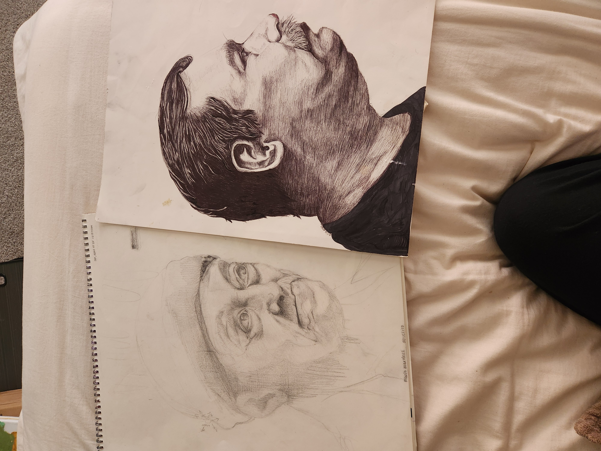

I'm a undergrad studying at The University of Texas at Dallas.
Hoping to complete my bachelor's in Media Studies.
(000)-000-0000
School Email: smartinez@utdallas.edu
Personal email : ShaniaM606@gmail.com
University of Texas at Dallas

- University of Wisconsin at Oshkosh
- University of Texas at Dallas
- Coding with Bootstrap lol
- Research and Writing
- WAHS Fabricaiton Lab, 2018
- Fabrication Center at UTD, 2022
- UTD SP/N Gallery, 2024
- Target Co. 2022
Brian Scott UTDallas Sp/n Gallery Director
bscott@utdallas.edu
Elizabeth Golb H&M Grapevine Store Manager
EGlob@gmail.com